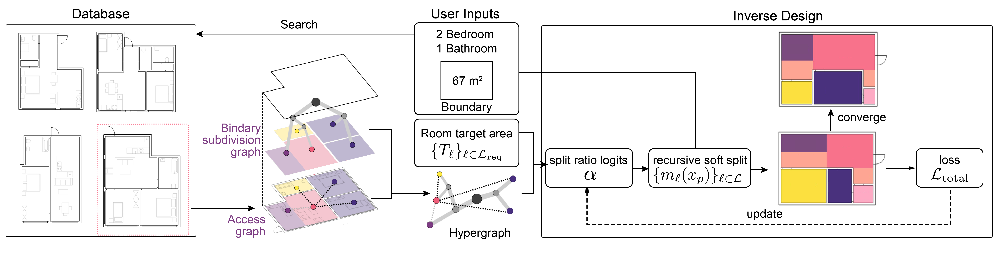
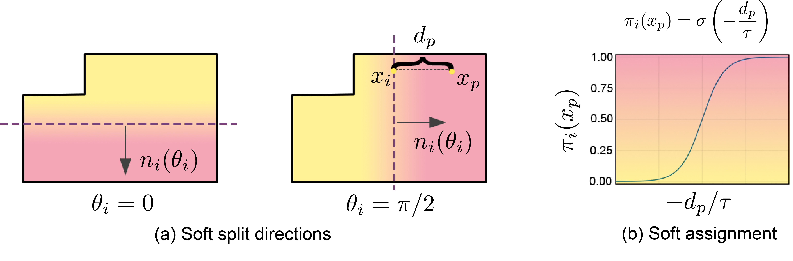
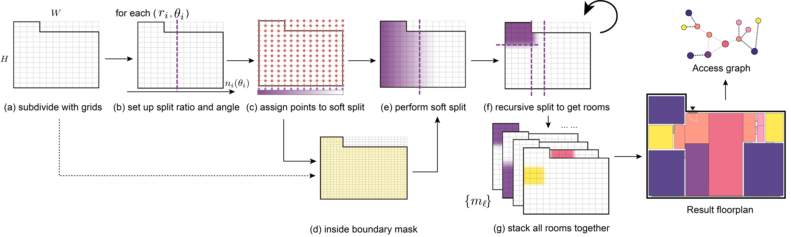
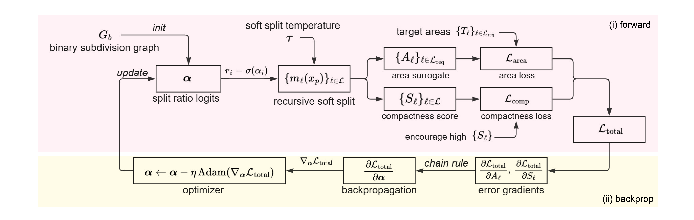

Inverse Design of Architectural Floorplans
Inverse design of architectural floorplans with gradient-based optimization of binary subdivision graphs
Abstract
We present a gradient-based inverse-design workflow for controllable floorplan synthesis. A hypergraph couples spatial subdivisions with room-access relationships, while differentiable soft splits enable optimization toward target room areas and compactness. The workflow adapts reference plans to new boundaries and supports adding or removing rooms for interactive architectural design.
Generate a floorplan
Start with a boundary and room requirements, retrieve a compatible reference graph, and optimize the layout.
Adapt boundaries
Different reference graphs produce alternative layouts within the same boundary.
Edit rooms
Designers can add or remove rooms by editing the graph, then rerun optimization to adjust the surrounding spaces.
How it works
Hypergraph representation. The hypergraph couples an access graph with a binary subdivision graph. The access graph captures room-to-room access using an adjacency matrix, while the binary subdivision graph encodes the hierarchical spatial partitioning of the floorplan. Given a target boundary and room program, the method first retrieves compatible hypergraphs from the database by comparing room counts, boundary shape, and boundary semantics.

Soft binary subdivision graph. The proposed method models the floorplan layout structure with a binary subdivision graph defined over a fixed boundary polygon. The graph captures the hierarchical subdivision of the interior, where each node induces a soft partition. These soft partitions are evaluated on a regular grid, providing differentiable estimates of room areas and other layout objectives.


Recursive subdivision and differentiable floorplan. To turn this graph into geometry, the boundary polygon is discretized into a grid of sample points. At each internal node, a split angle and ratio define the cut. Smooth left/right assignments are multiplied with the parent mask to obtain the child masks.
Starting from the root node, the soft split rule is applied recursively until the traversal reaches the leaf room nodes. Stacking these soft room masks forms the floorplan. The collection of leaf masks defines a differentiable floorplan representation: room areas and shape measures vary smoothly with the split ratios, providing the forward model for inverse design.
Inverse design loop. The pipeline uses this differentiable layout engine as the forward model in an inverse design loop, optimizing the split ratios so that the resulting floorplan satisfies the target room areas within the given boundary. The inverse design loop alternates between a forward pass that evaluates the current layout and its objective, and a backward pass that backpropagates gradients to the split ratios.

Grasshopper walkthrough
Reference search, inverse design, and room editing in Rhino/Grasshopper. Watch on YouTube ↗